- 基本概念 Concepts
VMware
- 下载 Download
- VMware Workstation 17 Pro
- 安装 Installation
-
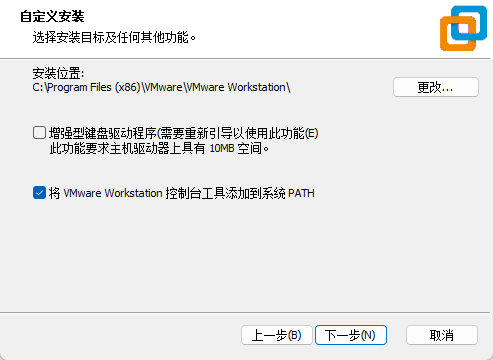
指定安装路径；添加环境变量
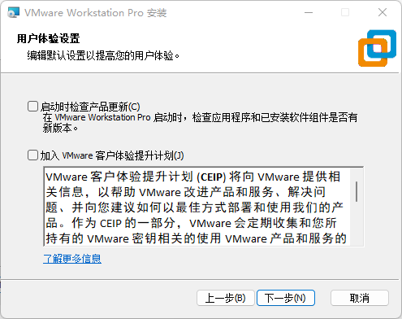
不要检查；不要体验
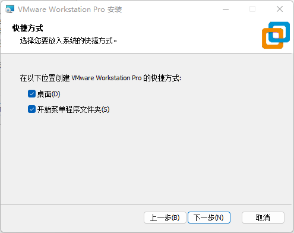
开始安装
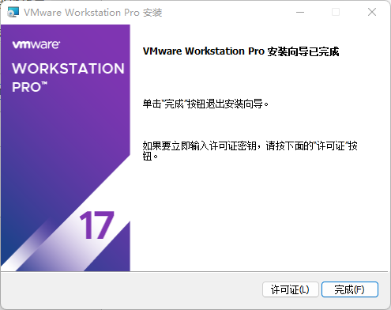
安装完成
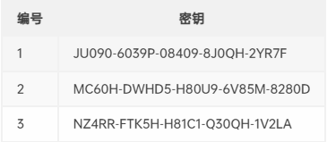
许可证[或自行搜索或购买]
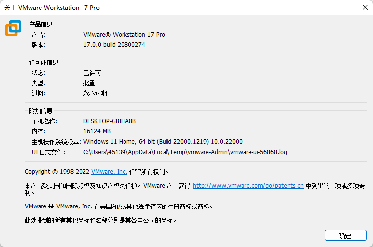
查看许可
Ubuntu
- 下载 Download
- Ubuntu 22.04.1 LTS
- 安装 Installation
- 说明
- . 安装过程保持联网
- . 安装过程大约持续10-20分钟
- 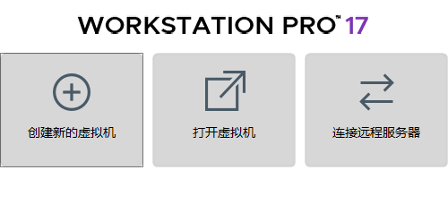
- 1. 创建新的虚拟机
- 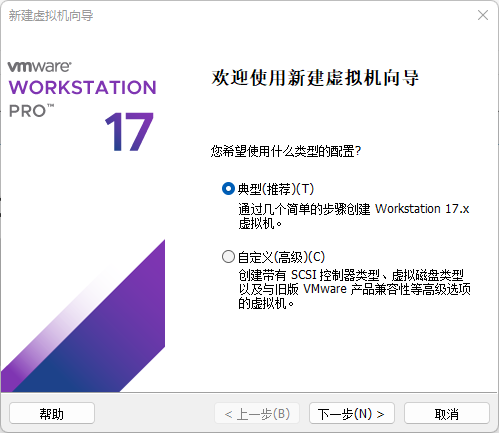
- 2. 使用向导
- 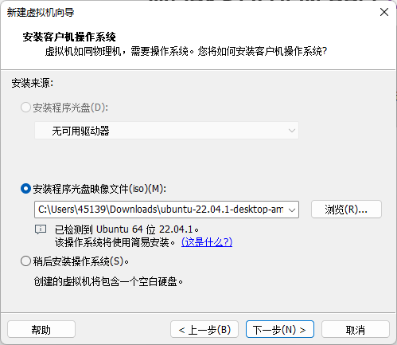
- 3. 选择Ubuntu镜像
- 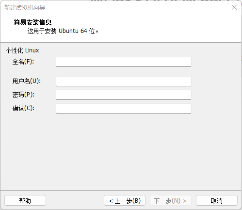
- 4. 完善使用信息
- 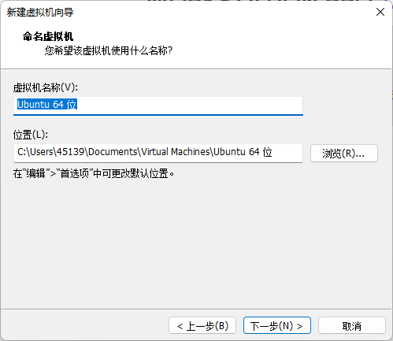
- 5. 指定安装路径
- 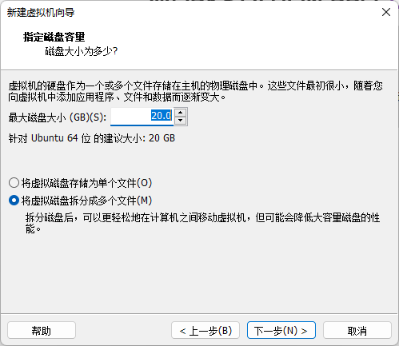
- 6. 磁盘分区大小[默认20G，根据硬盘容量决定]
- 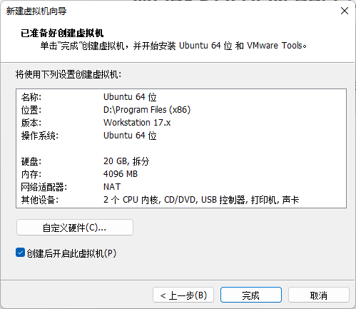
- 7. 确定设置；开始安装
- 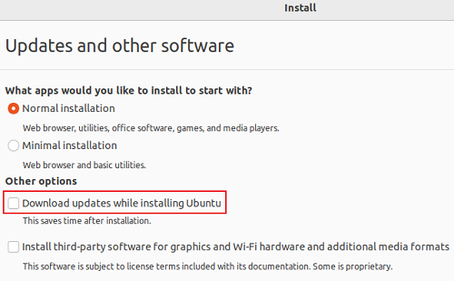
- 8. 取消安装过程中更新
- 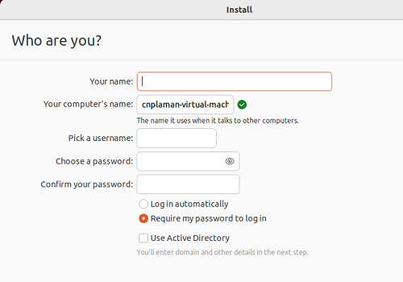
- 9. 系统信息[牢记]